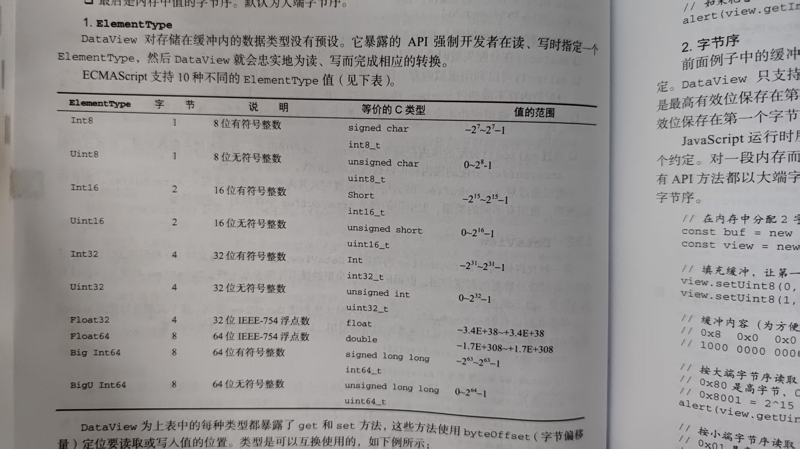

DataView
这个方法允许读写ArrayBuffer()
第一个参数,指向的是二进制缓冲区的本身
第二个参数,指向操作起始字节位点
第三个参数,限制视图为前x字节

有符号整数
有符号整数表示 0, 正数 ,
负数
无符号整数
无符号整数表示 0 , 正数
如果只设置了一个偏移位置,那么同时也设置定了长度
他们都是按位权来进行转换的 , 但是有符号数,要看最高位的数0 / 1 看是否是负数,是的话就要进行反码和补码
大端字节和小端字节是不一样的,主要是他们的排序方式不同